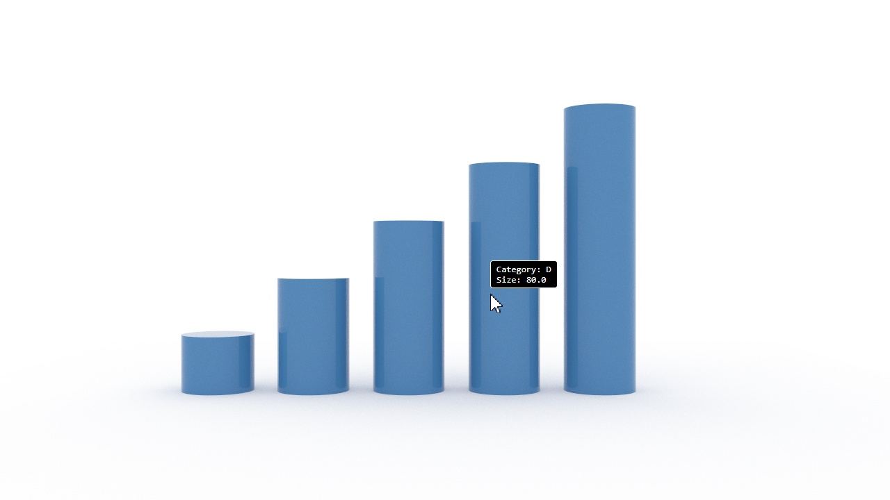

This builds on the Simple Camera by adding a tooltip that displays data values for the mark under the pointer. It uses a second renderer in segment mode to map pixel positions to data rows.
The example on this page can be tried directly using the link below. To build and run your own version, make sure you have the prerequisites in place.
The differences from the simple camera are:
data and scales to create a data-driven bar chartrenderer runs in segment mode with idSource set to
'pick', rendering a single frame to produce a pick image
Core.Pick.get() to retrieve the corresponding data row

The canvas, imports, renderer, spec parsing, scene loading, and camera manipulation steps are the same as the Simple Camera. The differences start at the segment renderer.
Unlike the previous examples, this spec includes inline data and scales to create a
bar chart. The marks reference the data via from and map values through scales:
const specJSON = {
"width": 640,
"height": 360,
"data": [
{
"name": "table",
"values": [
{ "category": "A", "size": 20 },
{ "category": "B", "size": 40 },
...
]
}
],
"scales": [
{ "name": "x", "type": "band", "domain": { "data": "table", "field": "category" }, "range": "width" },
{ "name": "y", "type": "linear", "domain": { "data": "table", "field": "size" }, "range": "height" }
],
"marks": [
{
"type": "rect",
"from": { "data": "table" },
"encode": {
"enter": {
"xc": { "scale": "x", "field": "category" },
"height": { "scale": "y", "field": "size" },
...
}
}
}
]
};
A second renderer renders a single frame in segment mode with
idSource set to 'pick'. Each pixel in the segment image encodes a unique pick ID
for the mark it covers:
const segmentCanvas = document.createElement('canvas');
segmentCanvas.width = canvas.width;
segmentCanvas.height = canvas.height;
const segmentRenderer = new WebGPURenderer.Main(segmentCanvas, {
renderMode: 'segment',
});
segmentRenderer.idSource = 'pick';
await segmentRenderer.initializeAsync();
segmentRenderer.loadScene(scene);
The segment image is read back into a pixel array via a 2D canvas for CPU-side lookup.
A regenerateSegmentImage function handles rendering and readback, and is called once at
startup and again after camera moves settle:
const readbackCanvas = document.createElement('canvas');
readbackCanvas.width = canvas.width;
readbackCanvas.height = canvas.height;
const readbackCtx = readbackCanvas.getContext('2d', { willReadFrequently: true });
let segmentPixels;
async function regenerateSegmentImage() {
segmentRenderer.copyCamera(camera);
segmentRenderer.frameCount = 0;
await segmentRenderer.updateAsync(0);
await segmentRenderer.renderAsync(0);
readbackCtx.drawImage(segmentCanvas, 0, 0);
segmentPixels = readbackCtx.getImageData(0, 0, canvas.width, canvas.height).data;
segmentDirty = false;
if (lastMouseX >= 0) { updateTooltip(lastMouseX, lastMouseY); }
}
await regenerateSegmentImage();
On mouse move, the pixel under the pointer is read from the segment image and decoded to a pick ID.
Core.Pick.get() maps the pick ID to a dataset and rowIndex:
const offset = (py * canvas.width + px) * 4;
const color = [
segmentPixels[offset] / 255,
segmentPixels[offset + 1] / 255,
segmentPixels[offset + 2] / 255
];
const pickId = Core.Color.colorRGBToNumber(color);
const info = Core.Pick.get(pickId);
if (info) {
const row = info.dataset.rows[info.rowIndex];
// Display row data in tooltip
}
A tooltipFields array defines which data columns to show and their labels. The tooltip is
positioned above the pointer:
const tooltipFields = [
{ field: 'category', label: 'Category' },
{ field: 'size', label: 'Size' },
];
// Build tooltip lines from matched fields
const lines = [];
for (const f of tooltipFields) {
const col = dataset.headings.indexOf(f.field);
if (col < 0) continue;
lines.push(f.label + ': ' + row[col]);
}The tooltip is hidden during camera drag, while the segment image is stale, and when the pointer leaves the canvas. After regeneration, the tooltip is automatically refreshed at the last known pointer position.
After the camera moves, the pick image becomes stale. Camera interactions set
segmentDirty = true and record the time of the last move. In the render loop, once
segmentRegenerateDelay milliseconds have elapsed since the last interaction,
regenerateSegmentImage is called to re-render and read back the segment image.